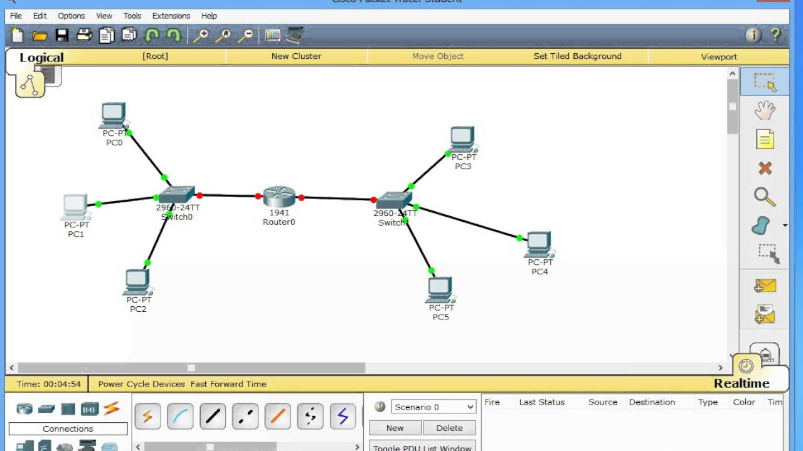

Hello! My name is Hayden O'Rourke. I'm a sophomore here at NAU, and I am pursuing a major in Cybersecurity. I have a bit of prior experience with HTML through a class that I took in high school, but I'm a bit rusty as it's been a few years. I previously have worked as a Tier 2 Desktop Support for the school, where my role was to image computers and deliver them across campus.
I purposely worked with older, outdated hardware to get a feel for working with unfamiliar tools.

CCNA training has given me the skills to configure and deploy Cisco hardware at a basic level.

| Institution | Program/Degree | Duration |
|---|---|---|
| Northern Arizona University | Cybersecurity | Current |
| West-Mec Northwest | Technical Education Program | High School |
| Company | Position | Duration |
|---|---|---|
| Northern Arizona University | Tier 2 Desktop Support | Previous Position |
I worked as a Tier 2 Desktop Support at NAU, which entails the imaging and deployment of computers, delivering them to customers, troubleshooting relevant issues, etc.
Email: hjo43@nau.edu
Phone: 602-784-3549
GitHub: GitHub Profile
LinkedIn: LinkedIn Profile